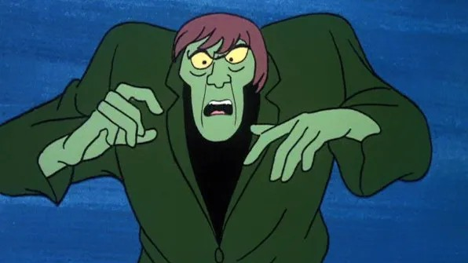
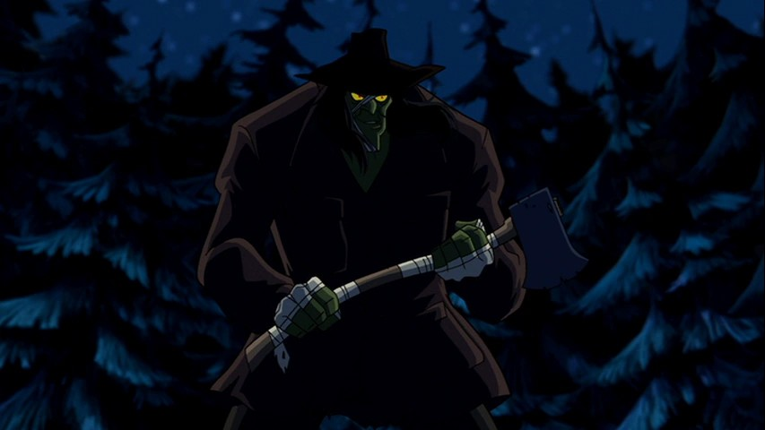
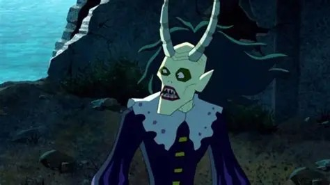

Dive into the spooky world of Scooby-Doo! Explore some of the most infamous monsters and uncover the mysteries behind them.

The Creeper first appears in Scooby-Doo, Where Are You? in the episode "Jeepers! It’s the Creeper.” This green monster is known for his slow zombie walk and glowing yellow eyes. The Creeper was originally used as an elaborate cover-up for bank robberies!

This Woodsman is from Scooby-Doo! Camp Scare, where he lurks in the forest carrying a large axe. He hunts down campers and the gang all thourghout their stay at Camp Little Moose. The Woodsman is used as a creepy campfire story, and was thought to be an old camp counselor who went insane and now terrorizes Camp Little Moose.

The Freak of Crystal Cove is from Scooby-Doo Mystery Incorporated! A terrifying villain with large horns, a long pale face, and pointy teeth, he threatens all who search for the Planispheric Disk. The Freak terrorizes the town of Crystal Cove and Mystery Inc., and is revealed to be much closer to the gang than anyone thought...
Scooby-Doo first made an appearance on our screens in 1969 in the cartoon series Scooby-Doo, Where Are You! The series introduced us to Mystery Inc., a group of teenagers consisting of Fred, Daphne, Velma, Shaggy, and of course, Scooby-Doo. The group would travel to different places, solving all kinds of mysteries.Each mystery involves a ghost or a spooky monster, but we never have to worry; by the end, the gang always uncovers what's truly going on! Whether it is a person under a mask, an old legend turned monster, or a creepy ghost, the gang will solve the spookiest of mysteries.